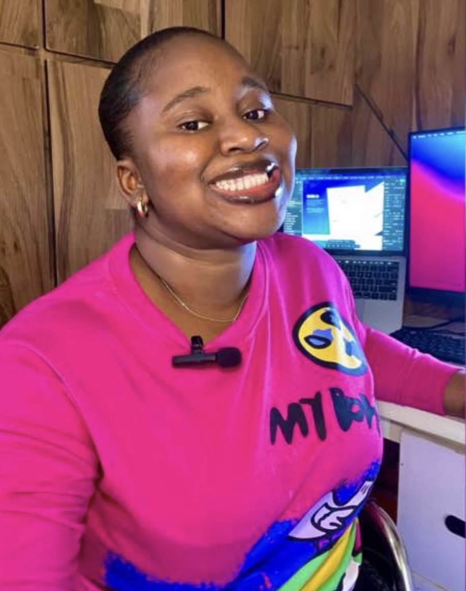

Curiosity first
Always exploring new ideas, tools, and ways to make things clearer.
UI/UX DESIGNER · AI WEB DEVELOPER
Thoughtful digital experiences, built with curiosity, care, and a little bit of magic.

I’m Jolomi, an aspiring web developer learning to turn ideas into welcoming, useful digital experiences. I enjoy the details: the way a page flows, how a button responds, and the feeling a colour can create.
My work brings together front-end fundamentals, creative problem-solving, and a genuine love of learning. Every project is a chance to get a little better.
More about working together ↗Always exploring new ideas, tools, and ways to make things clearer.
Good design starts with understanding who it’s for and what they need.
Small thoughtful choices add up to a more considered experience.
I’m growing my practice one thoughtful project at a time, with a focus on the essentials that make a website work beautifully.
Responsive, carefully structured websites that give your idea a clear and confident place online.
Finding a visual language that feels right for your story, from colour and type to the smallest detail.
Making useful information easier to explore, understand, and enjoy across the screen.
A small collection of learning, business, and community projects. Each one has its own story.
I’d love to hear what you’re dreaming up. Send a note and let’s see where it goes.
Say hello ↗